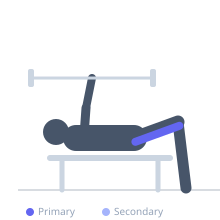
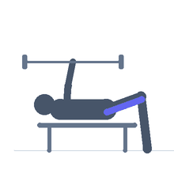

Exercise guide / Nordic Hamstring Curl Eccentric
Nordic Hamstring Curl Eccentric
The Nordic hamstring curl eccentric is a high-load hamstring exercise in which the exerciser slowly lowers the body forward from a kneeling position while the hamstrings eccentrically resist. It produces the highest eccentric hamstring forces of any bodyweight exercise and is extensively supported by research for reducing hamstring strain injury rates. It is used in both injury prevention programs and hamstring rehabilitation after strain.
Primary muscles
biceps femoris long head
semitendinosus
semimembranosus
Secondary muscles
Stabilizers
gluteus maximus
Equipment
No Equipment (Bodyweight)


Starting position
- Kneel on a mat with the ankles secured under a fixed object (a loaded barbell, a partner holding the ankles, or under a GHD pad). The body is upright with hips fully extended.
Setup
- Secure the ankles under a barbell, have a partner hold them, or use a GHD machine. Use a mat under the knees. Keep the hips extended throughout — do not allow them to flex.
Steps
- Step 1: Kneel with ankles secured and body upright in a tall kneeling position.
- Step 2: Keeping the hips extended and body in a straight line from knees to head, slowly lower the entire body forward toward the floor.
- Step 3: Use the hamstrings eccentrically to resist the fall as long as possible.
- Step 4: When the hamstrings can no longer hold the descent, catch yourself with the hands and push back to the start.
- Step 5: Use the hands to assist the return to upright — the concentric phase is not the training goal.
Coaching cues
- Keep your hips locked out — do not let them break backward
- Think about fighting gravity for as long as possible
- The hands are there to catch you, not to assist the descent
Breathing
- Exhale during the descent. Inhale at the bottom before pushing back up.
Range of motion
- Descend as slowly as possible to the floor or as far as the hamstrings can control. Full range is from upright to prone.
Tempo
- Start: 3–5 reps × 2 sets. Progress over 4–6 weeks to 3×10. The descent should take 3–5 seconds.
Common mistakes
- Hips flexing during the descent — the body must remain in a straight line from knees to head
- Descending too fast in early stages — control the tempo
- Skipping progression — beginners should start with heavily assisted eccentrics (hands very close to knees) before attempting a full lowering
Safety
- Very high hamstring load — this is classified as advanced and should not be performed in the first 2 weeks post-hamstring strain
- DOMS (delayed onset muscle soreness) is very common after the first session — start with 2–3 reps only
- Progress from 3×5 over several weeks before attempting high volumes
Training
- strength: 3–10 reps
- strength: 2–3 sets
- Rest: {'strength': 120}